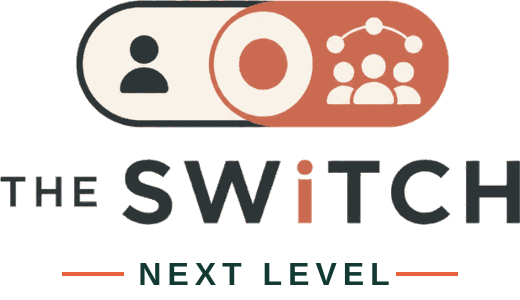

01 · Origin
Civic Return FlowStefanie Haslauer introduced the original Civic Return Flow transition architecture at the 2026 EU Civic Tech Hackathon: making the institutional response to citizen participation visible.

Independent continuation · working prototype v0.5 · 2026
And trust requires a visible return. Explore a fictional civic journey from public information through informed action to a reasoned institutional response.
Origins and attribution
01 · Origin
Civic Return FlowStefanie Haslauer introduced the original Civic Return Flow transition architecture at the 2026 EU Civic Tech Hackathon: making the institutional response to citizen participation visible.
02 · Hackathon
The Switch — collaborative projectThe interdisciplinary hackathon team jointly developed The Switch, extending access and understanding before participation and connecting them to the institutional return path.
Original team repository03 · Next Level
Independent research continuationThis separate prototype explores civic literacy, human judgement, informed action, public response, institutional accountability and organisational learning. It is not an official update by the original team.
Core principle: Participation creates input. Return Flow creates trust. Shared learning creates improvement.
Interactive simulation · fictional municipality
This six-stage scenario is fictional. It is not an open consultation. Answers are processed in this browser only; nothing is submitted or stored on a server.
STEP 1 OF 6
Civic Return Flow · illustrative institutional record
A fictional record makes the return path tangible. It is not a real submission, tracking system, government response or verified outcome.
Fictional demonstration Case CRF-DEMO-001
01 · Received
A resident's proposal about safer neighbourhood crossings has been recorded in the fictional consultation. A receipt would identify the channel and next steps.
02 · Reviewed
The fictional mobility office examines feasibility, accessibility, safety, budget constraints and alternative measures. The example does not claim that a real review occurred.
03 · Decision
In this invented case, the proposed crossing location is not approved because it conflicts with an existing junction safety plan. This is an illustrative rationale, not a real engineering finding.
04 · Public response
The fictional authority explains the decision and states that alternative pedestrian-safety measures will be considered in a future planning round.
05 · Visible outcome and learning
The record distinguishes an explained decision from a demonstrated change on the ground. Actual implementation, follow-up and recurring barriers would require independent verification.
Design hypothesis: an institution can make its response legible without promising that every contribution will be adopted. Whether this improves trust must be empirically tested.
Research and safeguards
Can people understand purpose, eligibility and deadlines?
Can people verify official sources and decide independently?
Can people use official participation channels safely?
Can institutions acknowledge input, explain decisions and show outcomes?
Can recurring access barriers improve public communication and processes?
Accessibility, transfer, fairness and real institutional outcomes require future empirical testing. This prototype does not establish effectiveness.
Research inspiration includes Paula Klemt's publicly described course on understanding administrative language. No teaching materials or outcomes are reproduced or claimed, and this prototype is not affiliated with that course. AI is optional, not required.
formation-ARC course catalogue · European Commission: plain language